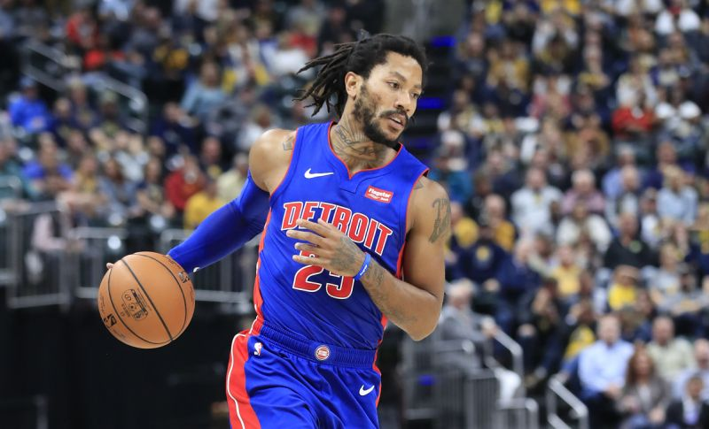

DERRICK ROSE
Detroit Pistons #25 Point Guard
Derrick Martell Rose (born October 4, 1988) is an American professional basketball player for the Detroit Pistons of the National Basketball Association (NBA). He played one year of college basketball for the Memphis Tigers before being drafted first overall by his hometown Chicago Bulls in the 2008 NBA draft. After being named the NBA Rookie of the Year, Rose, at age 22, became the youngest player to win the NBA Most Valuable Player Award in 2011.
| BIOGRAPHY | |||||
|---|---|---|---|---|---|
| TEAM | Detroit Pistons | POSITION | Point Guard | HT/WT | 1.88 m, 90 kg |
| DOB | 4/10/1988 (31) | COLLEGE | Memphis | DRAFT INFO | 2008: Rd 1, Pk 1 (CHI) |
| STATUS | Active | EXPERIENCE | 10th Season | HOMETOWN | Chicago, IL |


